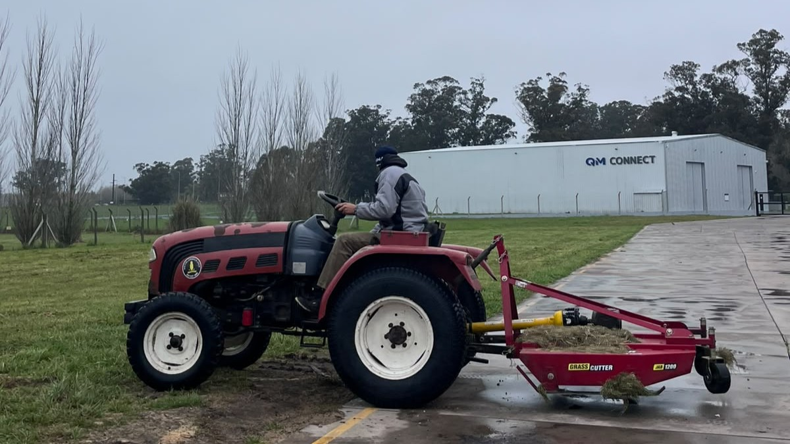
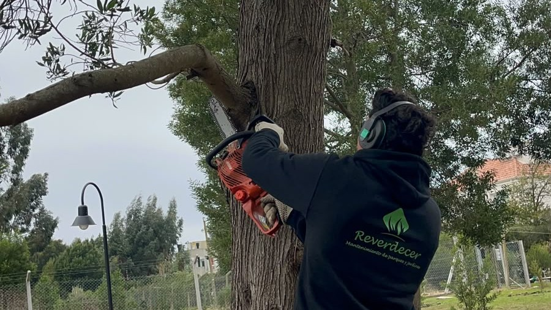
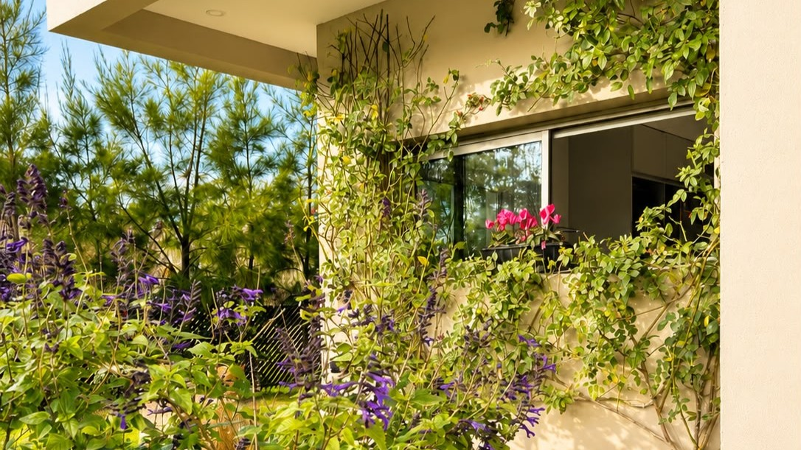
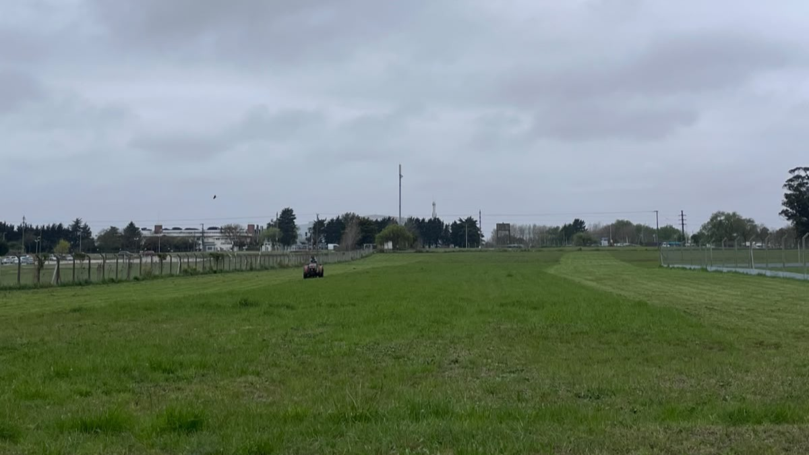
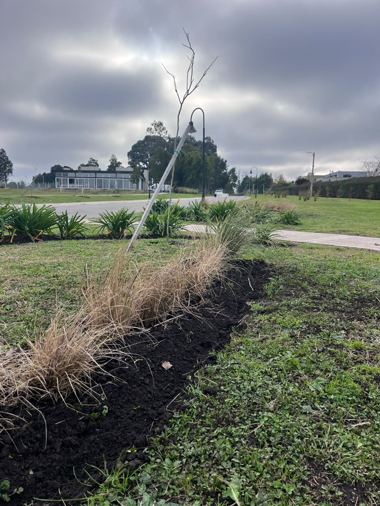
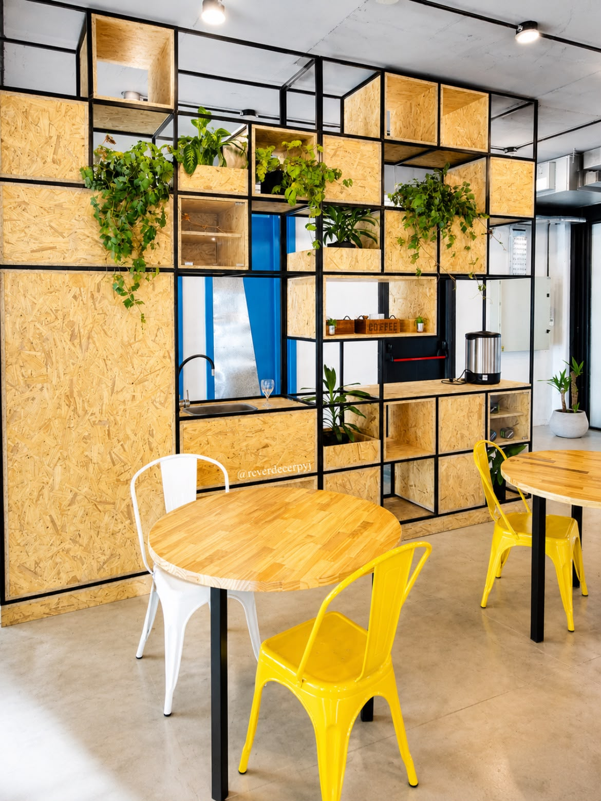
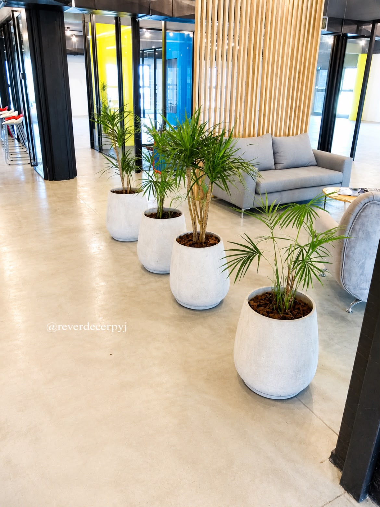
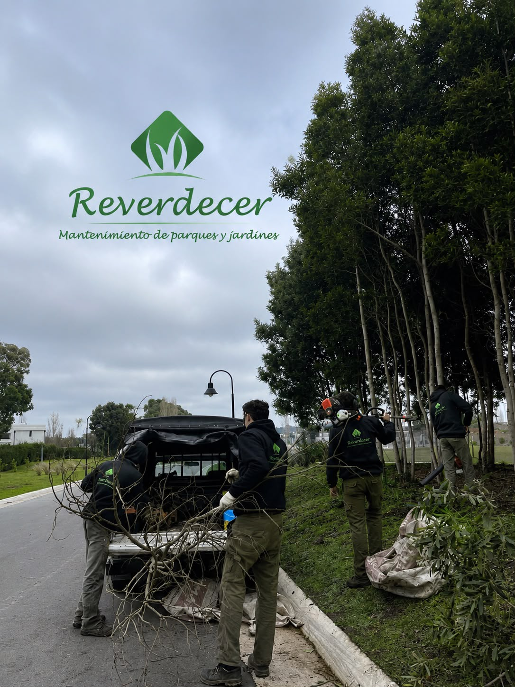

Corte de césped
Mantenimiento regular con maquinaria profesional para un resultado uniforme y prolijo durante todo el año.
Reverdecer Parques y Jardines
Especialistas en mantenimiento, podas y conservación de parques y jardines para particulares, empresas, countries y consorcios.
Servicios
Un servicio integral, pensado para particulares, empresas, countries, barrios privados, municipios y consorcios.

Mantenimiento regular con maquinaria profesional para un resultado uniforme y prolijo durante todo el año.

Poda técnica de formación, sanitaria y de altura, respetando el desarrollo natural de cada especie.

Diseño, nivelación de suelo, siembra de césped y creación integral de espacios verdes a gran escala.

Proyectos de paisajismo a medida, desde el concepto hasta la ejecución y el mantenimiento posterior.

Instalación de sistemas de riego adaptados a cada jardín o parque.

Planes de mantenimiento continuo adaptados a la frecuencia y necesidades específicas de cada espacio.
Cómo trabajamos
Relevamos el terreno y evaluamos sus necesidades específicas.
Elaboramos una propuesta clara, sin sorpresas ni letra chica.
Organizamos equipo, materiales y cronograma de trabajo.
Ejecutamos con maquinaria profesional y personal capacitado.
Acompañamos el resultado en el tiempo con visitas periódicas.
Trabajos



Transformaciones

Nosotros
Trabajamos con procesos ordenados y equipamiento profesional para que cada espacio verde se mantenga impecable, temporada tras temporada.
Cumplimos los plazos acordados y respondemos ante cualquier imprevisto.
Estándares de trabajo homogéneos en cada proyecto, sin importar su tamaño.